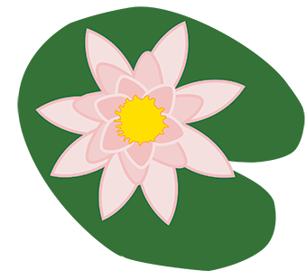
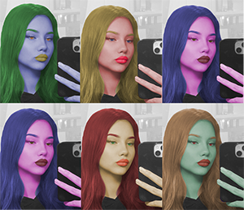

Moje vježbe s ovog kolegija
1. Vježba - Font
2. Vježba - Bezierova krivulja i precizno crtanje
3. Vježba - Boja, transformacije

4. Vježba - Gradijenti, transparencija
1. Projektni zadatak – Vektorska grafika
5. Vježba - Retuširanje
6. Vježba - Koloriranje

7. Vježba - Fotomontaža
2. Projektni zadatak – Piksel grafika
8. Vježba - Cinemagraf
9. Vježba - Video obrada
10. i 11. Vježba - Web stranica u HTML-u i postavljanje na github
Link na zadatak!